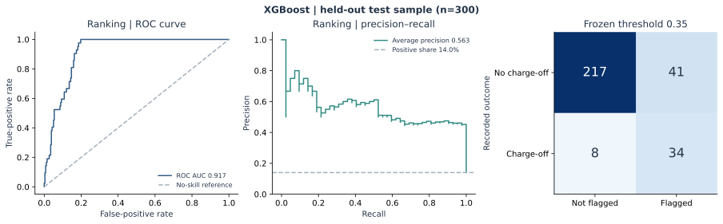

Precision
Among flagged cases, how many have the recorded charge-off outcome? This describes how selectively the rule identifies positive cases.
Python / Credit-Risk Research / Decision Analysis
How should an analyst flag credit risk when traditional credit history is limited? This collaborative study connects model evaluation with a practical decision: balancing unnecessary review flags against missed charge-offs.
New-to-credit profiles often contain limited conventional credit history. A useful analysis must represent missing credit scores, compare available financial and behavioral information, and explain what a model flag means for review.
A lower threshold can capture more charge-off cases while increasing unnecessary flags. A higher threshold can reduce review volume while missing additional cases. The project makes that trade-off explicit rather than treating a model score as a decision on its own.
The reviewed workflow runs on all 2,000 original project profiles, with 1,400 used for training and 300 each for validation and testing. XGBoost is selected by validation average precision; its score threshold is frozen at 0.35 before test evaluation.
| Held-out test measure | Result |
|---|---|
| ROC AUC | 0.917 |
| Average precision | 0.563, compared with a 0.140 no-skill baseline |
| Recall | 81.0% — 34 of 42 recorded charge-offs identified |
| Precision | 45.3% |
| Review share | 75 of 300 profiles flagged (25.0%) |
The counts make the trade-off concrete: 34 positive outcomes identified, 41 false-positive flags and 8 missed positives. These are reproduced retrospective classifications on the educational dataset.

Among flagged cases, how many have the recorded charge-off outcome? This describes how selectively the rule identifies positive cases.
Of all recorded charge-off cases, how many are flagged? This makes missed cases visible alongside the precision result.
How many profiles enter the flagged group at each threshold? This connects statistical performance with the scale of a potential review workload.
The workflow reports these measures together. Its validation rule seeks higher precision while requiring an illustrative minimum recall of 50% and at least 10 flagged validation cases, making the selection objective inspectable.
The repository provides verified access to the original CSV, a reusable Python package, a command-line runner and a notebook with seven executed code cells and four research figures. Aggregate data profiles, model comparisons, threshold tables and held-out metrics are ready to inspect. Twelve automated tests check feature eligibility, split separation, imputation, reporting and reproduction.
The analysis runs locally without Google Drive or an API key. One command regenerates the report and the local CSV used by the Tableau workbook template. The target is the retrospective Ever_ChargeOff label; the repository also provides a separate toy-data software demonstration.
The contribution is an end-to-end decision framework: define eligible inputs, handle missing information, compare models consistently and explain how the selected threshold changes the balance of flagged and missed cases. It demonstrates the connection between business objectives, data preparation, model evaluation and stakeholder reporting.